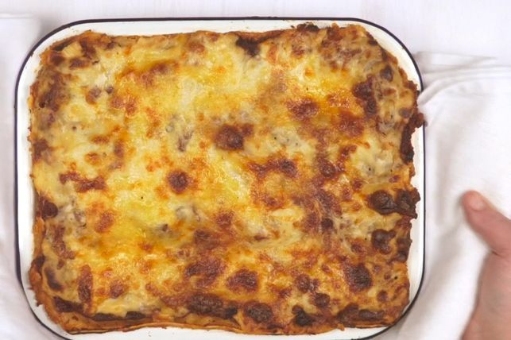

Lasagne

With layer upon layer of rich tomatoey beef mince, pasta, and creamy cheesy sauce,
it’s hard to find anything to dislike about lasagne. There are numerous reasons why this particular lasagne recipe has become so beloved.
The addition of wine in the red sauce makes it super flavourful, while the layering of pasta with mozzarella makes for the perfect cheese pull.
But if we were to pick one thing that makes this lasagne recipe stand out above all others, it’s the luscious bechamel sauce. A good home-made bechamel base takes time
but it’s worth it for the extra depth of flavour you won’t find with many lasagnes.
Ingredients
- 2 tsp olive oil
- 1 brown onion
- 2 garlic cloves
- 750g beef mince
- 2 cans of diced tomatoes
- 125ml red wine
- 55g tmoato paste
- salt and pepper
- mozzarella cheese
- mixed leaves
Steps
- Heat the oil in a large frying pan over medium heat.
- Meanwhile, to make the cheese sauce, combine the milk, onion, parsley stalks, peppercorns, cloves and bay leaves in a medium saucepan
- Strain the milk mixture through a fine sieve into a large jug. Discard solids.
- Melt the butter in a large saucepan over medium-high heat until foaming.
- Gradually pour in half the milk, whisking constantly with a balloon whisk, until mixture is smooth.
- Place saucepan over medium-high heat and bring to the boil, stirring constantly with a wooden spoon, for 5 minutes or until sauce thickens and coats the back of the spoon.
- Preheat oven to 180°C. Brush a rectangular 3L (12 cup) capacity ovenproof dish with oil to lightly grease. Spread one-quarter of the bechamel sauce over the base of the prepared dish.
- Cut the lasagne into 8 portions and serve with